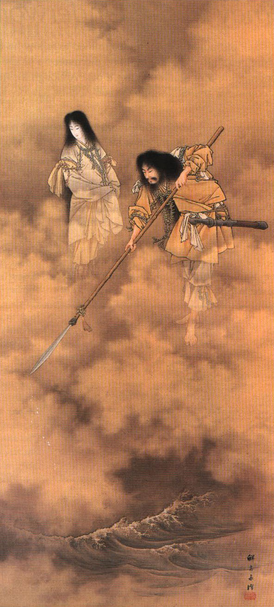

Antes da criação de tudo em um período conhecido como Kuniumi. Os primeiros Kamis, os Kotoamatsukami (別天神), surgiram a partir do caos, o principal destes era Ame-no-minakanushi, o primeiro Kami a existir no universo, ele é associado a estrela do norte e a constelação das sete estrelas, uma conotação que não durou muito tempo. Por conta do conflito gerado com a vinda dos missionários Budistas durante o período Heiano, o culto a este Deus quase desapareceu. Seu nascimento foi seguido de outros 4, Takamimusubi, Kamimusubi, Umashi’ashikabihikoji e Amenotokotachi, estes 5 deuses criaram Takamagahara (高天原), os céus e Ashihara no Nakatsukuni (葦原の中つ国), a terra e os ligaram por uma ponte chamada Ama-no-uki-hashi.
Estes 5 deuses foram seguidos pelos Kamiyonanayo, os deuses que vieram após a criação e que ao contrário dos anteriores, vieram em pares de homens e mulheres com gênero definido, eles eram Uhijini e Ikuguhi, Otonoji e Otonobe, Omodaru e Aya-kashiko-ne e por fim Izanagi-no-Mikoto e Izanami-no-Mikoto.
Estes deuses não possuem uma forte adoração apesar de sua importância na mitologia shintoísta, não existem templos conhecidos onde eles podem ser adorados
Izanagi e Izanami
Izanagi e Izanami foram os ultimos deuses Celestiais a surgirem durante o Kuniumi, o jovem casal recebeu a ordem dos demais Deuses para que consolidassem a criação das ilhas Japonesas, assim começando o Kamiumi, o surgimento do japão e o nascimento dos deuses terrestres. Para fazerem isto eles receberem Amenonuhoko, uma lança incrustada com jóias e que em algumas fontes da história era na verdade uma Naginata. O casal teria descido pela ponte em direção ao oceano primordial que se tornaria a terra, Izanagi remexeu a água turva e barrenta do mundo e ergue a lança para um pouco de água respingasse dela, quando uma unica gota de água respingou da lança e caiu de volta ao oceano, uma ilha surgiu. Eles chamaram essa ilha de Onogoro-Shima e fizeram sua casa lá, até hoje ninguém sabe onde fica essa ilha
Na ilha, Izanagi e Izanami construiram um enorme palácio e o adornaram com colunas e pilastras. Os deuses ordenaram que eles procriassem a partir de um ritual muito específico, neste ritual, eles iriam se encontrar na frente da casa, iriam virar de costas um para o outro e dar a volta na casa, ao se encontraram do outro lado, Izanagi se curvaria e depois Izanami, e após isso, eles poderiam fazer sexo entretanto, a primeira vez que fizeram o ritual, fizeram errado com Izanami se curvando primeiro, quando tiveram um filho, hiruko nasceu sem braços, sem pernas e sem ossos então teriam mandado ele em um barco a deriva pelo oceano antes de seu terceiro aniversário. A próxima vez que tentaram o ritual, eles fizeram certo e assim conseguiram criar as 8 ilhas principais do Japão: Tsushima, Iki, Oki, Iyo, Awaji, Tsukushi, Sado e Yamato, a ilha principal do país